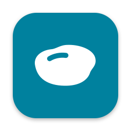

Puddle BackupPrivacy policy
Effective [DATE]. This covers the Puddle app for Android and the Puddle app for Mac.
In short: only your own phone and Mac can ever read your files. They're encrypted on the way so no one else can see them, not even the developer, and they're never kept on anyone's servers. Puddle has no accounts. Online, the phone app only checks your subscription with Google Play, sends anonymous usage statistics (you can turn them off), and sends feedback if you choose to write some.
Your files
Puddle copies the photos, videos and folders you choose from your phone to a folder you choose on your Mac, encrypted so that only your paired phone and Mac can read them. Today they travel directly over your local network. When you browse your backups from the phone, they come from your Mac the same way.
On the phone, Puddle keeps your settings, the paired Mac's name and address, a record of what was backed up, recent previews and copies (limited in size, some cleared after a day) and an activity log. It all stays in Puddle's private storage and isn't included in Android's cloud backup. On the Mac, your backups are ordinary files in the folder you chose. They're as safe as the Mac and drive they're on, so we recommend turning on FileVault.
What else leaves your phone
- Subscription check. The app asks Google Play whether your Google account has an active Puddle subscription. Google handles payment, the free trial and cancelling under its privacy policy; Puddle never sees your payment details.
- Anonymous usage statistics. Short notes such as "a backup finished: scheduled, 101–1000 files, 1–10 GB" or "the Gallery was opened", with the app and Android version, phone model and language. Never file or folder names, device names, your location, or any ID that identifies you or your phone; numbers are rounded into ranges. They go to Aptabase in the EU, which uses your internet address only to tell the country and to count daily users anonymously, and doesn't store it. Turn them off in Settings → Privacy; anything not yet sent is then deleted. The Mac app sends none.
- Feedback, only when you send it. Your message, its type, your email if you give one, the app and Android version and phone model, and, if you tick it, the recent activity log with file names and addresses hidden. It's stored in the developer's Google account and emailed to the developer, and used only to fix problems, improve Puddle and reply to you.
- Logs, only when you share them. Share logs sends the activity log wherever you choose, with file names and addresses hidden.
Google and Apple also handle some data when you install or run the apps, under their own privacy policies.
Permissions
Camera, only to scan the pairing QR code. Photos, videos and the folders you pick, to back them up. Notifications, for backup progress. Alarms and start-up, so the nightly backup runs on time. Network, to reach your Mac and for the items above.
Deleting your data
Uninstalling the phone app deletes everything it stored; Unpair clears previews and copies straight away. Your backups on the Mac are ordinary files you can delete in Finder. To have feedback you sent deleted, email the address below. Usage statistics can't be linked to you, so there's nothing to look up.
Children
Puddle isn't directed at children and doesn't knowingly collect personal information from children.
Changes and contact
Changes to this policy will be posted here with a new date. Questions: uzairabdullah148@gmail.com